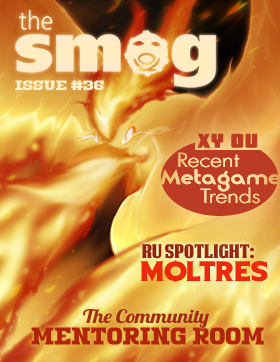

[title]
The Smog Community Webzine

[head]
<link href="/media/smog/smog-issue.css" type="text/css" rel="stylesheet" />
<style type="text/css">
/* Necessary */
h1 { display: none; }
/* ********************* */
</style>

[page]
<div id="smog-main-header">
<a href="/smog/"></a>
<p>Smogon's Web-zine</p>
<div>Released September 29, 2014</div>
</div>

<!-- Begin #page-wrapper -->
<div id="page-wrapper" class="full">

<div id="current-issue">

<div id="contribs">
This issue of The Smog is brought to you by <a href="contributors">these contributors</a>.
</div>
</div>

<!-- Begin #issue-contents -->
<div id="issue-contents">

	<!-- Begin first column -->
	<div class="column">
		<div class="section general">
			<h3>General</h3>
			<a href="note-from-the-editor">Note from the Editor</a>
			<a href="puzzle">Puzzle Page</a>
			<a href="community-mentoring-room">The Community Mentoring Room</a>
			<a href="battle-spot">Battle Spot: Nope, It's not BS</a>
			<a href="interview">Interview with Toast++</a>
		</div>

		<div class="section battling-strategy">
			<h3>Battling Strategy</h3>
			<a href="ou-spotlight-thundurus">OU Spotlight: Thundurus</a>
			<a href="ru-spotlight-moltres">RU Spotlight: Moltres</a>
			<a href="lc-spotlight-zigzagoon">LC Spotlight: Zigzagoon</a>
			<a href="xy-hazards">Beginner's Guide to Entry Hazards: XY Edition</a>
			<a href="follow-the-leader">Follow the Leader - Redirection in Doubles</a>
			<a href="voltturn-knockoff">VoltTurn and Knock Off: An Explosive Mix</a>
			<a href="xylc-scarves">XY LC Scarves are Still in Style</a>
		</div>

		<div class="section entertainment">
			<h3>Entertainment</h3>
			<a href="interesting-moves">Moves That Would Make Life More Interesting</a>
		</div>
	</div>

	<!-- Begin second column -->
	<div class="column">
		<div class="section arts-and-recreation">
			<h3>Arts &amp; Recreation</h3>
			<a href="judge-a-pokemon">Judge A Pok&eacute;mon: Wingin' It</a>
			<a href="studio-update">Smeargle's Studio Update</a>
		</div>

		<div class="section metagame">
			<h3>Metagame</h3>
			<a href="recent-metagame-trends">XY OU: Recent Metagame Trends</a>
			<a href="missing-from-ou">What's Missing From OU</a>
			<a href="post-aegislash">The Post-Aegislash Metagame</a>
			<a href="sun-viability">Sun Viability in OU</a>
			<a href="ru-suspect">RU Suspect Coverage: Stages 1 - 3</a>
			<a href="overrated-ru">Into the Trash Heap: The Most Overrated RU Pok&eacute;mon</a>
			<a href="dark-horses">Dark Horses: Underrated Pok&eacute;mon in RU</a>
			<a href="lc-misdreavus-ban">XY Little Cup: The Ban of Misdreavus</a>
			<a href="lc-rank-b">LC: Rank B for Badass</a>
			<a href="viability-in-the-family">Viability Doesn't Always Run in The Family - Part 3</a>
			<a href="climbing-the-ropes">Climbing the Ropes: A Guide to Learning a New Tier</a>
			<a href="underrated-abilities-in-bh">Underrated Abilities in the Balanced Hackmons Metagame</a>
			<a href="normal-stabmons">Normal-types in the STABmons Metagame</a>
			<a href="remembering-our-roots">Remembering Our Roots Redux: Where Are They Now (Part 2: RSE)</a>
			<a href="bw-ou-final-analysis">BW OU Final Metagame Analysis</a>
		</div>

		<div class="section other">
			<h3>Other Features</h3>
			<a href="pokemon-history">Pokémon History: Rivalries Over the Generations</a>
			<a href="steven-stone">Steven Stone: Then and Now</a>
			<a href="battler-types">The different types of Pok&eacute;mon Battlers</a>
			<a href="pokemon-spectacular">Theorymonning the Pok&eacute;mon Spectacular</a>
		</div>
	</div>
</div> <!-- /end #issue-contents -->

<div class="clear"></div>
</div> <!-- /end #page-wrapper -->

<!-- Do NOT modify anything after this line. -Setsuna -->
<script type="text/javascript" src="http://ajax.googleapis.com/ajax/libs/jquery/1.8.3/jquery.min.js"></script>
<script type="text/javascript" src="/media/smog/smog.js"></script>